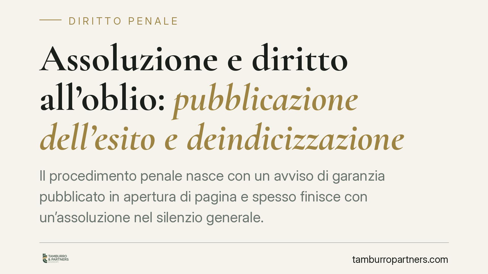

Assoluzione e diritto all'oblio: pubblicazione dell'esito e deindicizzazione
Il procedimento penale nasce con un avviso di garanzia pubblicato in apertura di pagina e spesso finisce con un'assoluzione nel silenzio generale. Il legislatore torna sul tema del diritto all'oblio e della reputazione dell'imputato assolto. Vale la pena distinguere gli strumenti già vigenti da quelli di nuova introduzione, che vanno verificati sul testo definitivo pubblicato.

Il paradosso di partenza
Un'indagine penale si apre spesso con grande evidenza mediatica: l'avviso di garanzia finisce in prima pagina o in apertura di un sito. L'eventuale assoluzione, che arriva anni dopo, cade nel silenzio. Chi è stato assolto resta associato, sui motori di ricerca, a un'accusa poi rivelatasi infondata.
Su questo squilibrio tra il clamore dell'accusa e la discrezione dell'assoluzione si concentra il dibattito legislativo e si misurano gli strumenti di tutela della reputazione.
Inquadramento normativo: tre canali distinti, da non confondere
Nel nostro ordinamento convivono strumenti diversi, con presupposti e autorità competenti differenti. Tenerli separati è essenziale.
1. Deindicizzazione ex art. 64-ter disp. att. c.p.p. La norma, introdotta dal D.Lgs. 8 novembre 2021, n. 188 (in attuazione della cosiddetta Riforma Cartabia e della direttiva UE 2016/343 sulla presunzione di innocenza), consente a chi ha ottenuto un provvedimento di archiviazione, una sentenza di non luogo a procedere o una sentenza di assoluzione di chiedere la deindicizzazione dei dati personali presenti sui motori di ricerca. Il provvedimento è adottato con decreto del giudice che riporta l'annotazione secondo cui il nome non deve più comparire nei risultati di ricerca collegati all'accusa. È una via giudiziale, non amministrativa.
2. Cancellazione e rettifica ex artt. 16-17 GDPR (Reg. UE 2016/679). In via distinta, l'interessato può rivolgersi direttamente al titolare del trattamento e, in caso di inerzia, reclamare al Garante per la protezione dei dati personali per ottenere la cancellazione o l'aggiornamento dei dati. È il canale amministrativo, tipicamente invocato per contenuti non più attuali o inesatti.
3. Eventuale obbligo di pubblicazione dell'esito. La fonte in esame segnala un nuovo intervento normativo che introdurrebbe un obbligo, a carico del direttore responsabile, di dare conto dell'esito del procedimento penale — inclusa l'assoluzione — con il coinvolgimento del Garante in caso di inerzia. [DA VERIFICARE SUL TESTO DEFINITIVO: estremi esatti della legge — numero, data, articolo modificato o introdotto. Non pubblicare questo paragrafo come obbligo vigente prima del riscontro in Gazzetta Ufficiale.]
Se confermato, si tratterebbe di un meccanismo di natura additiva e non ablativa: non la rimozione del contenuto originario, ma l'aggiornamento della notizia con l'indicazione dell'esito favorevole, dotato di pari evidenza rispetto alla notizia dell'accusa.
La differenza tra intervento additivo e deindicizzazione
La distinzione non è teorica. La deindicizzazione rende meno reperibile la notizia: il contenuto resta online, ma non emerge più dalla ricerca per nome. L'intervento additivo lascia invece visibile la vicenda, affiancandole però l'informazione sull'assoluzione.
Sono logiche opposte. La prima punta sull'oscuramento, la seconda sulla completezza. Un assolto può avere interesse all'una o all'altra a seconda del contesto: a volte conta non comparire, altre volte conta che chi legge trovi anche l'esito.
Il bilanciamento con la libertà di cronaca
Qualunque tutela della reputazione si confronta con la libertà di manifestazione del pensiero e di cronaca garantita dall'art. 21 della Costituzione. Il diritto all'oblio non cancella la storia: opera quando l'interesse pubblico alla notizia si è affievolito e il peso sulla persona è diventato sproporzionato.
Un obbligo di pubblicazione dell'esito, letto in questa chiave, è coerente con la funzione informativa della stampa: non la comprime, la completa. Resta però da verificare come il testo definitivo articoli tempi, modalità e sanzioni.
Cosa fare in concreto
In termini generali, chi è stato assolto può valutare i seguenti profili.
- Individuare lo strumento adatto: deindicizzazione giudiziale, cancellazione/rettifica in sede Garante o aggiornamento della notizia sono rimedi distinti, con presupposti diversi.
- Raccogliere la documentazione dell'esito: il provvedimento di archiviazione o la sentenza di assoluzione è il presupposto di ogni istanza.
- Verificare la reperibilità online: mappare dove la notizia compare e con quale evidenza aiuta a scegliere il rimedio.
- Attendere il testo definitivo del nuovo intervento normativo prima di confidare su obblighi non ancora pienamente verificabili.
Disclaimer
Contributo informativo a cura di Tamburro & Partners — Avv. Giuseppe Tamburro. Non costituisce parere legale.
Ogni condominio ha una storia a sé.
Se gestisci un'amministrazione e vuoi un confronto su una specifica questione condominiale, scrivi allo studio. Ti rispondiamo entro un giorno lavorativo.